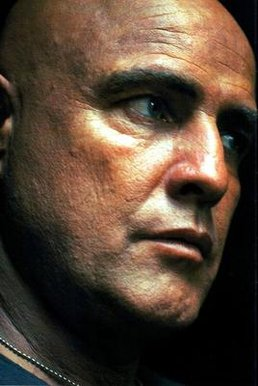

Apocalypse Now, Still (Marlon Brando as Colonel Kurtz)
Francis Ford Coppola · 1979 · Film still, colour
In copyright. Look and learn: shown for study, not for download.
Marlon Brando arrived in Manila in 1976 very overweight and began working with Francis Ford Coppola to rewrite the ending. Coppola played down his weight by dressing him in black, photographing only his face and using a taller actor as his double. Kurtz is based on the ivory trader of the same name in Joseph Conrad's novella Heart of Darkness, of 1899. According to Eleanor Coppola the film was at one point six weeks behind schedule and $2 million over budget.